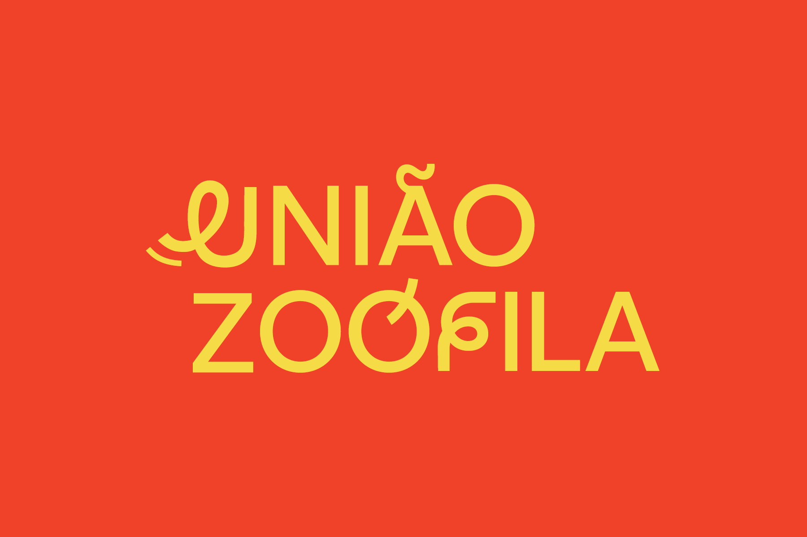
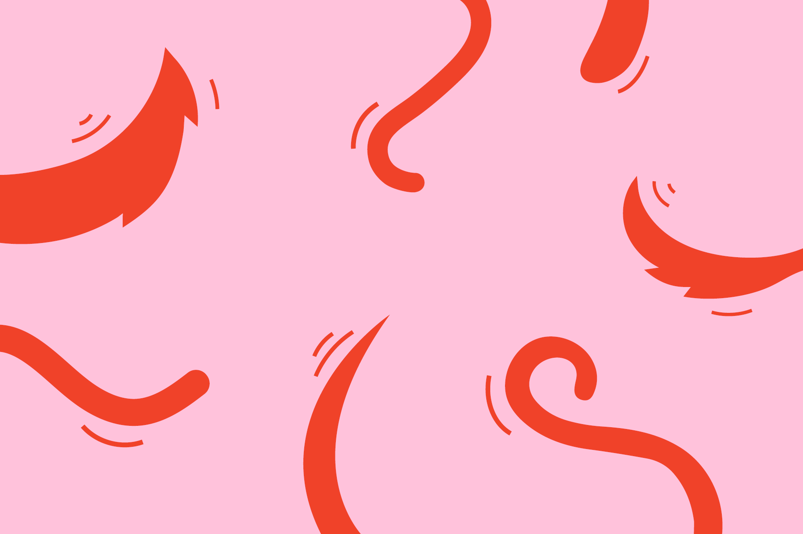
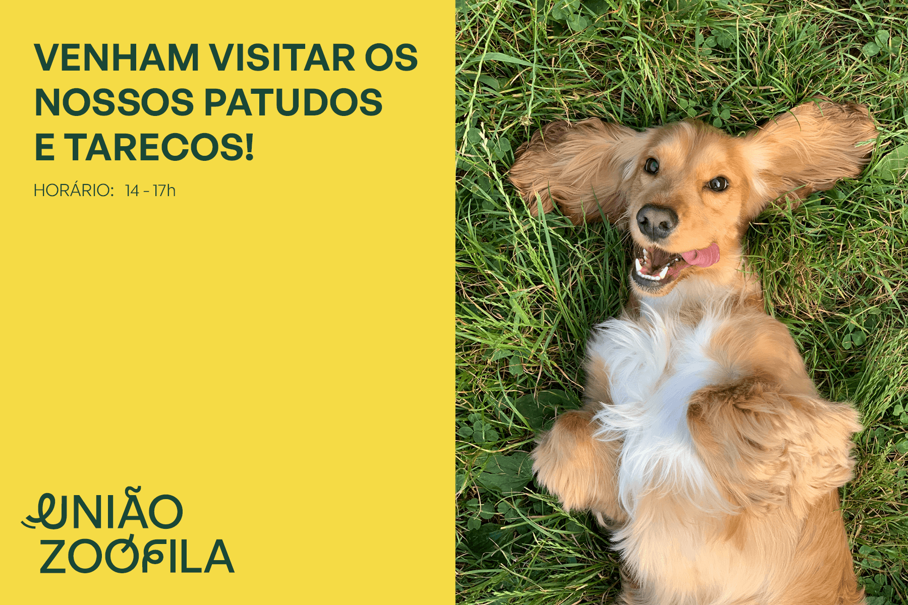
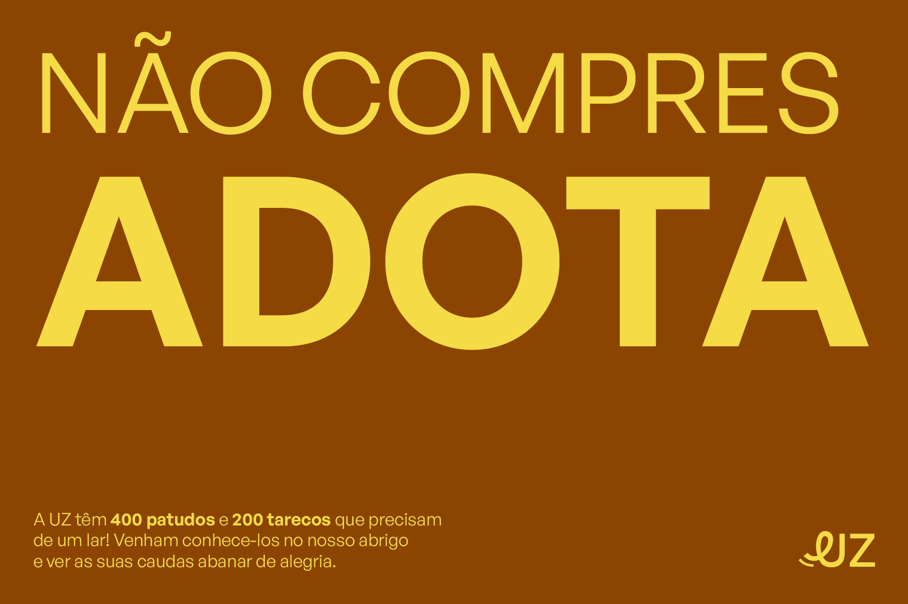
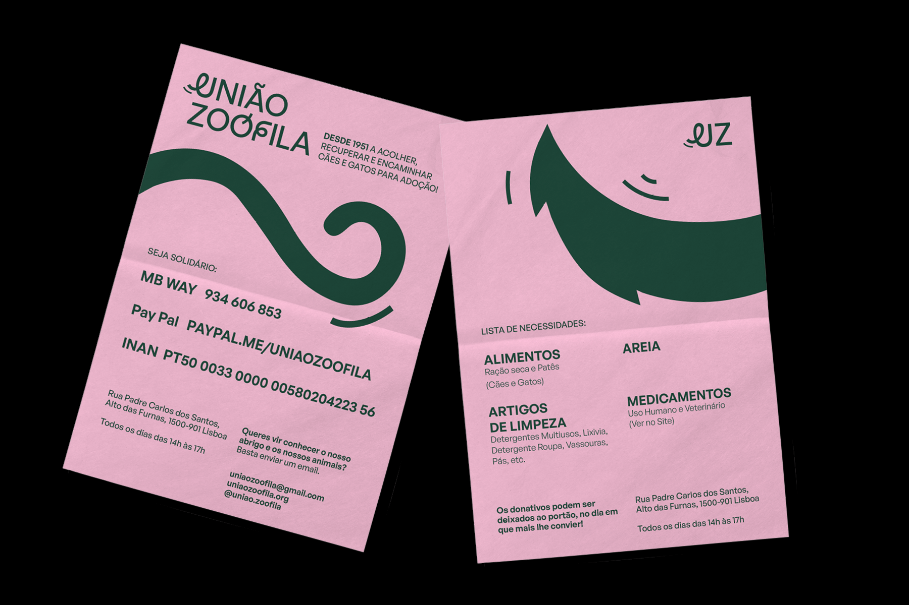
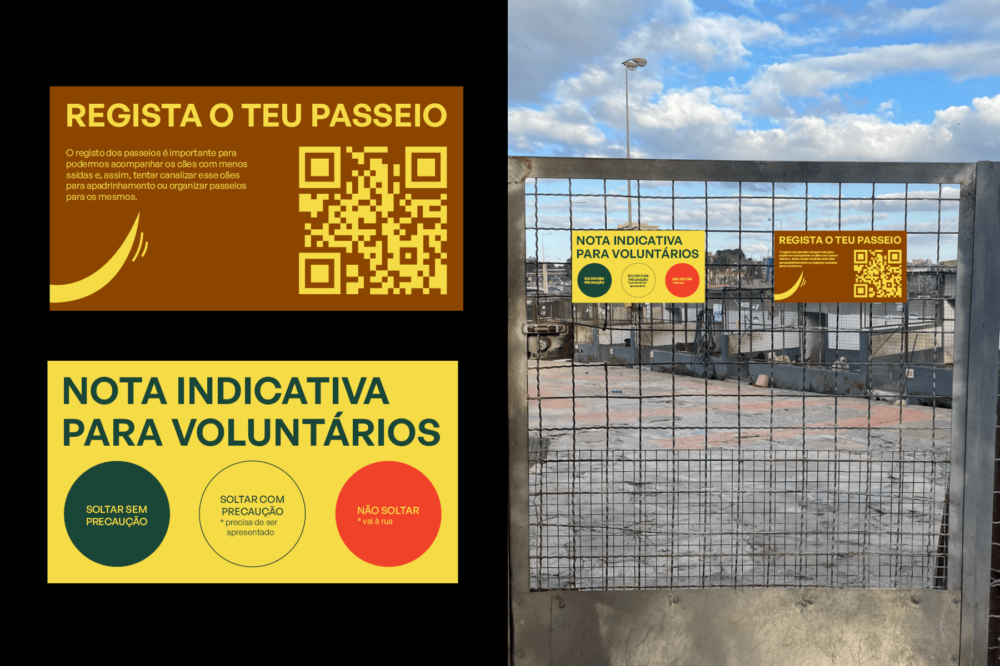
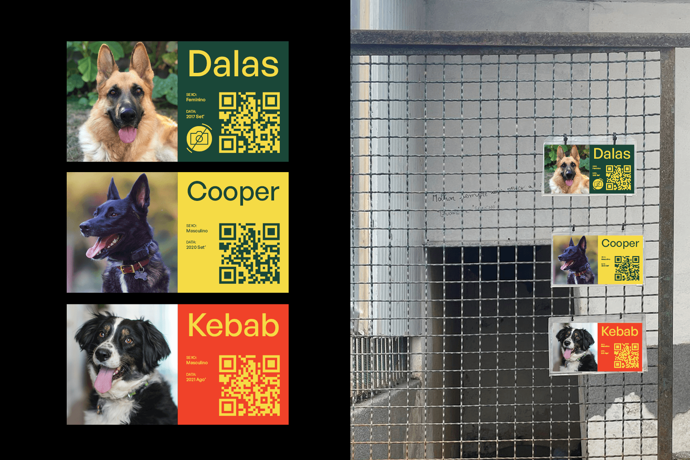
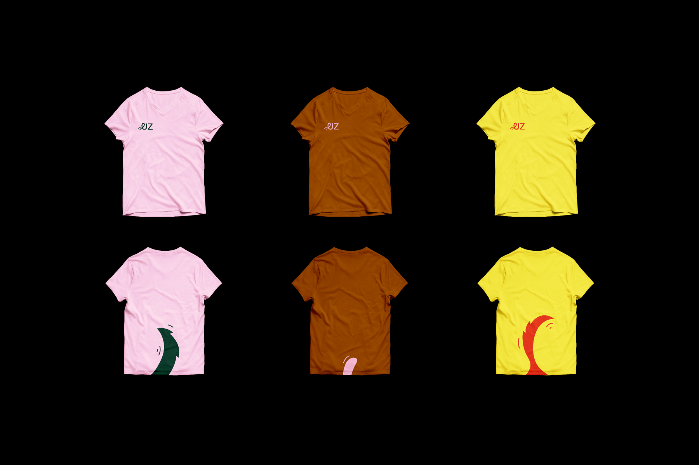
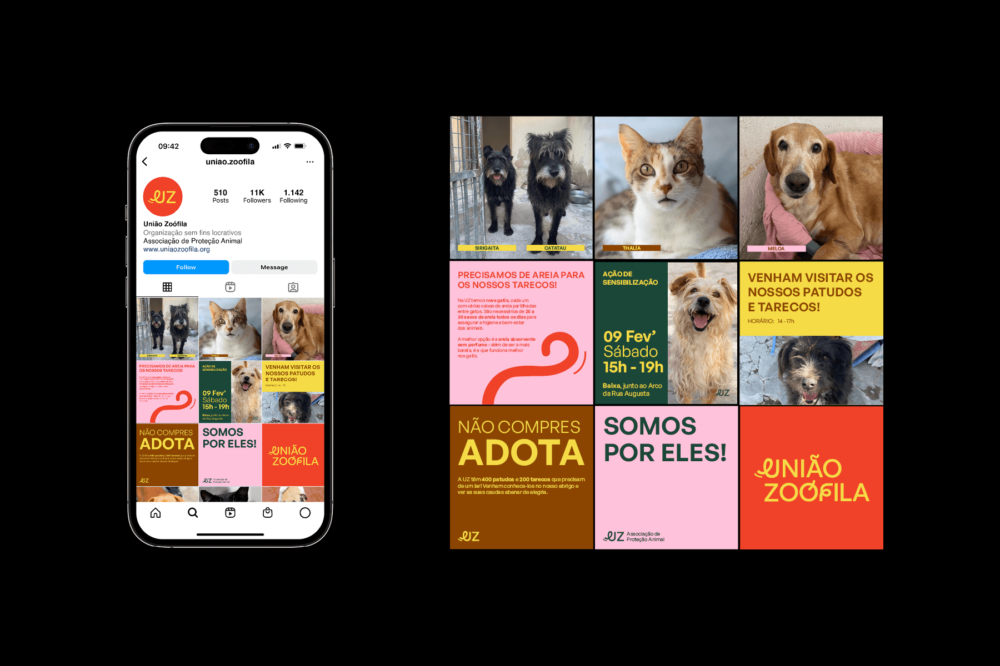

União Zoófila
Redesigning the visual identity and communication of the União Zoófila to make its communication more uniform. After analyzing the competition from other associations, I realized that most of them used icons with cats, dogs or paws. So I decided not to do that and to change the brand logo. The wagging of an animal's tail is an exceptional communication tool, so I decided to use that playfulness in the brand identity.
Academic Project
Rebranding
2023








